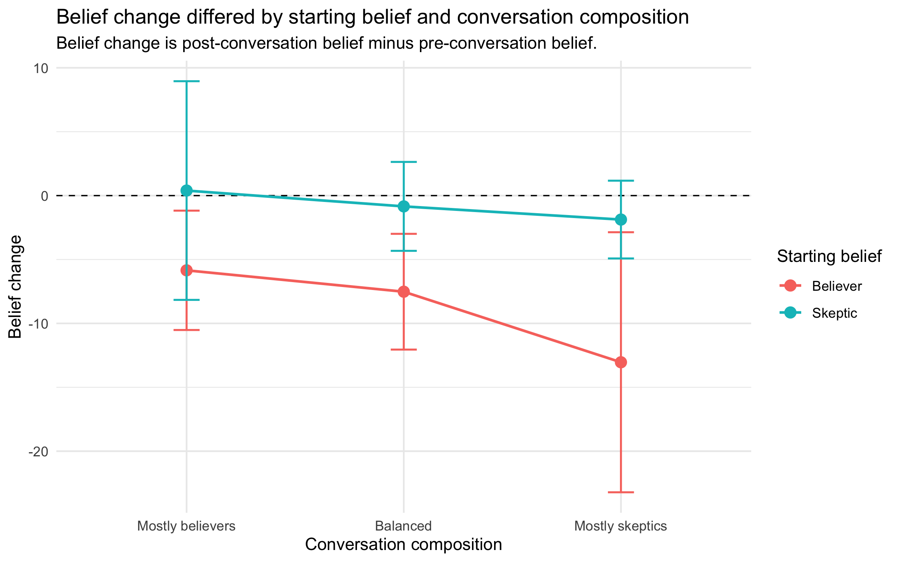
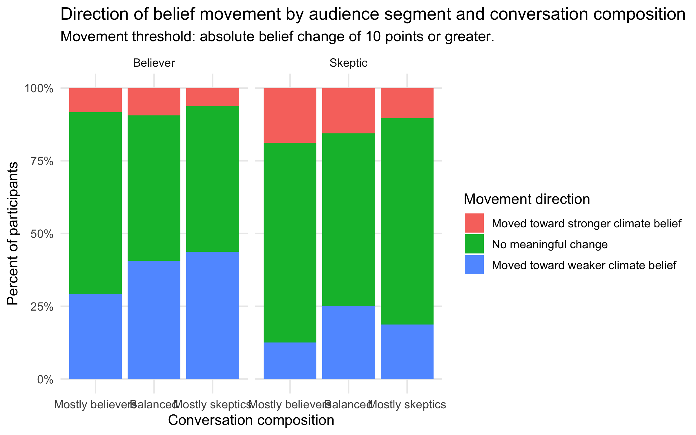
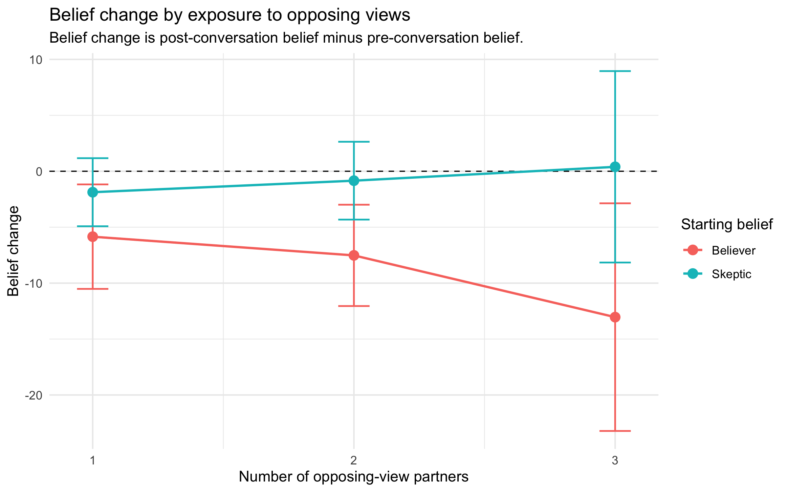
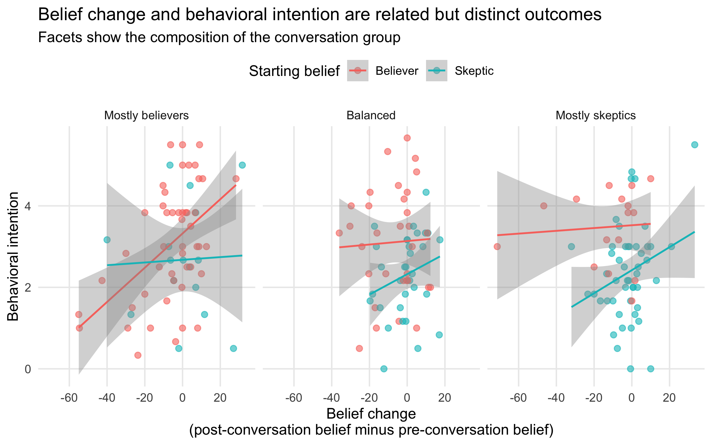
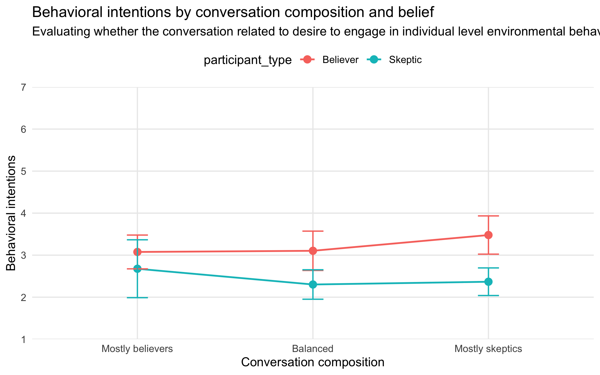

Overview
This project examines whether online group conversations can shift climate-change beliefs and environmental behavioral intentions. Participants were placed into short online conversations with others who either shared or opposed their starting views. The design created groups with different mixes of climate-change believers and skeptics, allowing the analysis to test whether conversational exposure operated similarly across audience segments.
The central insight is that dialogue did not appear to persuade symmetrically. Skeptics showed little evidence of average belief movement, while believers showed more negative belief change when exposed to more skeptical conversation contexts. At the same time, behavioral intention did not simply mirror belief change: believers still reported higher action-readiness than skeptics in several conversation contexts.
Research question
When people discuss a polarized issue in small online groups, does exposure to opposing views shift beliefs and behavioral intentions in the same way for everyone?
Applied takeaway: Dialogue-based interventions should not be evaluated only by asking whether they “work” on average. They can produce different effects for different audience segments, and attitude change may not map directly onto behavioral intention.
Study design
Conversation composition
Participants were sorted into four-person online chat rooms based on their starting climate-change beliefs. Groups varied in whether they included mostly believers, a balanced mix, or mostly skeptics.
Outcomes
The analysis focused on pre-to-post belief change and post-conversation behavioral intention, allowing the project to separate attitude movement from action-readiness.
Analytic approach
I used R to clean and reshape the data, estimate mixed-effects models with chat room as a random intercept, and visualize group-level patterns and post hoc comparisons.
Interpretive focus
Rather than treating the conversation as a single intervention effect, the analysis asks for whom the conversation mattered, under what social conditions, and for which outcomes.
Conversation structure
Participants were assigned to four-person online chat rooms based on their starting climate-change beliefs. The study varied the composition of each conversation group so that participants could be exposed to different levels of agreement and disagreement.
Mostly believers
Three climate-change believers and one skeptic.
Balanced
Two climate-change believers and two skeptics.
Mostly skeptics
One climate-change believer and three skeptics.
Measures
The analysis focused on two outcome families: climate-change belief and behavioral intention. Belief items were measured using 0–100 thermometer-style scales, while behavioral intention items were measured using 1–7 Likert scale response scales.
Climate-change belief items
0–100 thermometer items
- Scientific evidence points to a warming trend in global climate.
- Humans have very little effect on climate temperature. Reverse-coded
- Global warming presents a serious threat to human life.
Behavioral intention items
1–7 Likert-type items
- I intend to replace light bulbs in my home with more energy efficient bulbs.
- I intend to recycle at home.
- I intend to use reusable bags.
- I intend to buy recycled paper.
- I intend to vote for politicians who support environmental initiatives.
- I intend to write to my representatives about environmental concerns.
Key findings
Belief change was asymmetric
Skeptics showed little evidence of average movement from no change. Believers, by contrast, showed more negative belief movement, especially in balanced and mostly-skeptic conversation contexts.
Opposing-view exposure was not a simple persuasion dose
More exposure to opposing views did not simply move people toward the opposing side. The clearest pattern was that believers became less strong in their climate beliefs as skeptical exposure increased.
Behavioral intention told a different story
Believers often reported higher behavioral intentions than skeptics, even in contexts where their belief-change scores were negative.
Measurement matters
The results show why intervention evaluations should measure both belief change and behavioral intention rather than assuming one outcome fully captures the other.
Visual evidence

Belief change by conversation composition. Believers showed more negative average belief change than skeptics, especially in balanced and mostly-skeptic groups. The dashed line marks no average belief change.

Directional movement diagnostic. This diagnostic view classifies participants by whether their belief change exceeded a meaningful threshold. It helps distinguish average movement from the distribution of individual responses.

Exposure to opposing views. Opposing-view exposure did not operate like a simple persuasion dose. As exposure increased, believers showed increasingly negative belief change, while skeptics remained closer to no average change.

Belief change and behavioral intention. This plot shows why belief change and action-readiness should be treated as related but distinct outcomes. Some participants showed negative belief movement while still reporting meaningful behavioral intention.

Behavioral intention by group. Believers reported higher behavioral intentions than skeptics in several conversation contexts, even where their climate beliefs moved downward.
Technical details
The full technical report includes the analysis plan, model tables, estimated marginal means, post hoc comparisons, movement diagnostics, and interpretation notes.
The report was created from an R Markdown workflow and is linked here as a technical appendix.
Tradeoffs considered & Reflections
This project was useful not only because of the statistical results, but also because it highlighted the practical complexity of running online interaction studies. Unlike a standard individual-level survey experiment, the intervention depended on forming live groups with specific belief compositions.
- Small cell sizes require cautious interpretation. Some conversation conditions had relatively small sample sizes, especially when broken down by participant type and group composition. I therefore interpret the findings as evidence of an important pattern rather than as final, definitive estimates.
- Online interaction studies create operational constraints. Group assignment depended on who joined the study at the same time. Because skeptics were harder to recruit on the online platforms used at the time, the study design required prioritizing the formation of mostly-skeptic groups when enough skeptical participants were available.
- Dropout can disrupt intended group structures. The experimental design targeted four-person groups with specific compositions, but participant dropout or no-shows can alter the realized conversation environment. That makes it important to distinguish intended assignment from the actual interaction context participants experienced.
- Average effects can obscure heterogeneous responses. The project motivated additional diagnostic checks because a mean belief-change score can hide whether many participants moved slightly or a smaller number of participants moved substantially.
Design lesson: For live online group experiments, in addition to random assignment, it is improtant to also consider recruitment imbalances, timing, how groups form, and attrition.
Learnings:
This project demonstrates how I approach people science and behavioral analytics work: coming up with interpretable questions, translating to design, using appropriate statistical models, and turning technical findings into practical implications for intervention design.